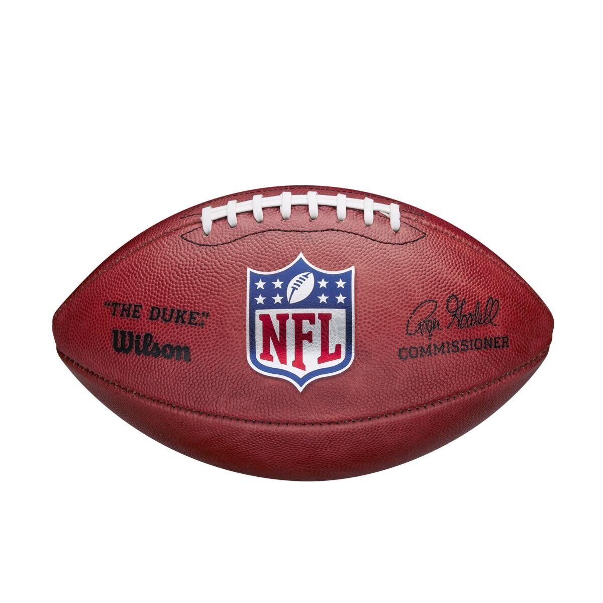

Case Studies
-
Test Image-

Output on Microsoft Azure A close up of a bottle
Output onMobilenet Model Water Bottle
result- Microsoft Azure is more accurate
- Test Image-
Output on Microsoft Azure A close up of a ball
Output onMobilenet Model Baseball
result- Mobilenet is more accurate
-
Test Image-

Output on Microsoft Azure A close up of a basketball game
Output onMobilenet Model football
result- Mobilenet is more accurate
- Test Image-